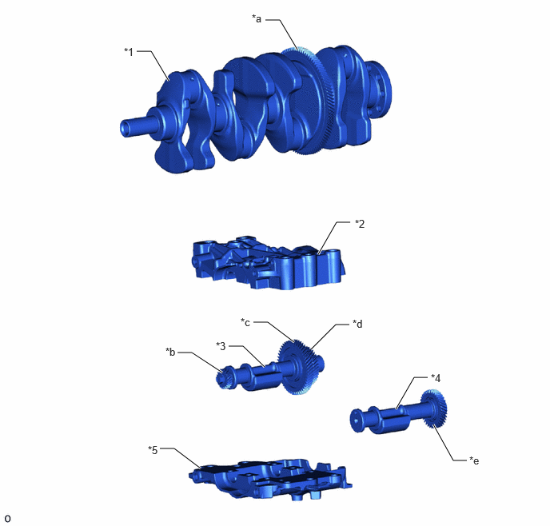
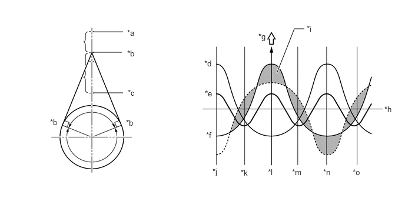

| Last Modified: 10-07-2025 | 6.11:8.1.0 | Doc ID: NM100000002GYDF |
| Model Year Start: 2024 | Model: Tacoma | Prod Date Range: [12/2023 - ] |
| Title: T24A-FTS (ENGINE MECHANICAL): ENGINE UNIT: BALANCE SHAFT; 2024 - 2026 MY Tacoma Tacoma HV [12/2023 - ] | ||
BALANCE SHAFT
CONSTRUCTION
(a) An engine balancer assembly is used to reduce vibration. The inertial mass of the weight inside the engine balancer assembly is optimized, reducing the muffled sound inside the vehicle cabin.
(b) The crankshaft directly drives the No. 1 balance shaft.
(c) The engine balancer assembly is separated from the stiffening crankcase assembly, thus making it easier to be serviced. Additionally, the engine balancer assembly is fastened to the highly-rigid cylinder block sub-assembly with bolts through the stiffening crankcase assembly, reducing weight of the stiffening crankcase assembly, noise and vibrations.
|
*1 |
Crankshaft |
*2 |
No. 2 Balance Shaft Housing |
|
*3 |
No. 1 Balance Shaft |
*4 |
No. 2 Balance Shaft |
|
*5 |
No. 1 Balance Shaft Housing |
- |
- |
|
*a |
Balance Shaft Drive Gear |
*b |
Oil Pump Drive Gear (Iron Gear) |
|
*c |
No. 1 Balance Shaft Driven Gear (Iron Gear) |
*d |
No. 2 Balance Shaft Driven Gear (Iron Gear) |
|
*e |
No. 3 Balance Shaft Driven Gear (Iron Gear) |
- |
- |
(d) In an in-line 4-cylinder engine, the crankshaft angle for cylinders No. 1 and No. 4 is exactly the opposite (180°) from the position of cylinders No. 2 and No. 3. Therefore, the inertial force of the pistons and the connecting rods of the former 2 cylinders and of the latter 2 cylinders almost cancels each other out. However, because the position at which the piston reaches its maximum speed is located toward top dead center from the center of the stroke, the upward inertial force is greater than the downward inertial force. This unbalanced secondary inertial force is generated twice for each rotation of the crankshaft.
Inertial Force Generated by In-line 4 Cylinders
|
*a |
Top Dead Center |
*b |
Point of Max. Speed |
|
*c |
Bottom Dead Center |
*d |
Inertial Force of Cylinders No. 2 and No. 3 |
|
*e |
Combined Inertial Force of All Cylinders (Unbalanced Secondary Inertial Force) |
*f |
Inertial Force of Cylinders No. 1 and No. 4 |
|
*g |
Inertial Force |
*h |
Crankshaft Angle |
|
*i |
Inertial force that cannot be canceled |
*j |
-180° |
|
*k |
-90° |
*l |
0° |
|
*m |
90° |
*n |
180° |
|
*o |
270° |
- |
- |
(e) To cancel the unbalanced secondary inertial force, 2 balance shafts are provided that rotate twice for each rotation of the crankshaft. By doing this they generate an inertial force in the opposite direction. Also, in order to cancel the inertial force generated by the balance shafts themselves, there are actually 2 shafts rotating in opposite directions.
Inertial Force of Balance Shafts

|
*a |
0° |
*b |
90° |
|
*c |
180° |
*d |
270° |
|
*e |
Inertial Force of Balance Shafts |
*f |
Crankshaft Angle |
|
*g |
Secondary Inertial Force |
*h |
Mass Direction of Balance Shaft |